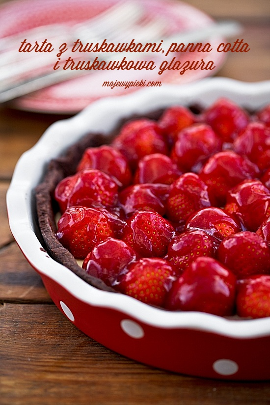

 Składniki na kruchy spód:
Wszystkie składniki umieścić w naczyniu i szybko zagnieść. Z ciasta uformować kulę, spłaszczyć, owinąć folią, schłodzić w lodówce przez 30 minut. Ciasto można też wyrobić w malakserze. Po wyjęciu ciasta z lodówki rozwałkować je na papierze do pieczenia na grubość około 3 - 4 mm, następnie razem z papierem przenieść nad formę od tarty, obrócić, delikatnie odkleić papier i wylepić nim formę do tarty (o średnicy 25 cm), wysmarowaną wcześniej masłem i oprószoną mąką. Wyrównać. Na ciasto wyłożyć papier do pieczenia, a następnie na papier wysypać specjalne kulki ceramiczne, które obciążą ciasto (może to być również fasola lub ryż). Tak przygotowane ciasto wstępnie podpiec w temperaturze 190ºC przez 15 minut. Następnie papier usunąć, piec kolejne 15 - 20 minut, do zezłocenia. Wyjąć z piekarnika, wystudzić. Budyń miętowy:
Świeżą miętę drobno porwać. 500 ml mleka zagotować do wrzenia, zdjąć z palnika, dodać miętę, wymieszać do jej przykrycia, nałożyć pokrywkę, pozostawić do zaparzenia i wystudzenia (około 30 - 45 minut). Po tym czasie mleko odcedzić, listki dobrze odcisnąć z mleka (wykręcić i wyrzucić). W naczyniu zmiksować 100 ml mleka (pozostałego), cukier, żółtka, obie mąki (najszybciej blenderem). Do garnuszka wlać 500 ml miętowego mleka, doprowadzić do wrzenia. Dodać zmiksowaną mieszankę jajeczną i zagotować jak budyń, cały czas mieszając, do zgęstnienia. Gotowy budyń przełożyć na kruchy spód od tarty, przestudzić. W lekko przestudzony budyń powkładać truskawki, oprószyć pistacjami, udekorować listkami mięty. Podawać schłodzoną.